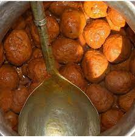

Rista

Rista- a traditional meatball dish
Rista is a traditional Kashmiri meat-ball dish and delicious component of a quintessential Kashmiri Wazwan.
It is traditionally made with lamb or mutton, moulded into thick meatballs using hands, the meatballs are
served in a rich curry tempered with red chilli powder.
The key ingredients for making this dish are:
- Minched Mutton.
- Grounded Red chilli.
- Black Cardamom.
- Green Cardamom.
- Saffron.
- Turmeric.
- Cloves.
- Onion Shallot.
- Ghee.
- Aniseed.
The steps to be followed to prepare this dish are:
- Mash the minced mutton
- Take a bowl and add in the clean minced mutton, then to make the koftas,
take a masher and smoothly mash the meat. Grease your hand with some oil
and make small meat balls. Next take a pan and add in some water,
once the water is hot enough, add in the minced meat balls.
- Cook the meat balls with the spices
- Cook for 10 mins till the mince balls rise to the surface of the water, turn off
the flame and keep it aside. Take a pan and heat some oil, add in the ghee and
gradually add the spices, like turmeric, chili paste, cloves, cinnamon, black and
green cardamom, shallot paste and cook for some time.Next, add in saffron water
along with the meat balls and meat stock. cover the lid and let it cook.
- Garnish and relish
- Cook for 10 minutes till gravy thickens. Heat ghee in a separate pan, add to the mince gravy
and close with a tight lid for 2 minutes. Garnish with anise seed and serve hot. Add salt to
taste and garnish with coriander leaves.
The key ingredients and how to cook.